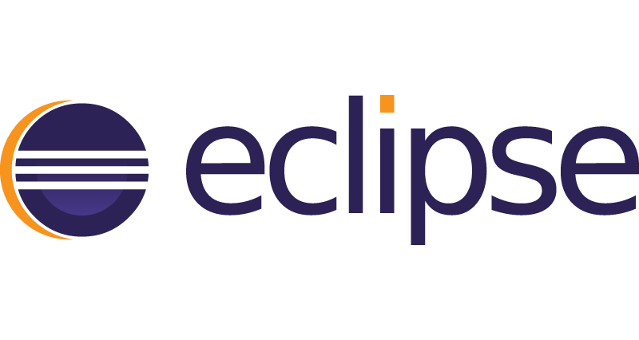
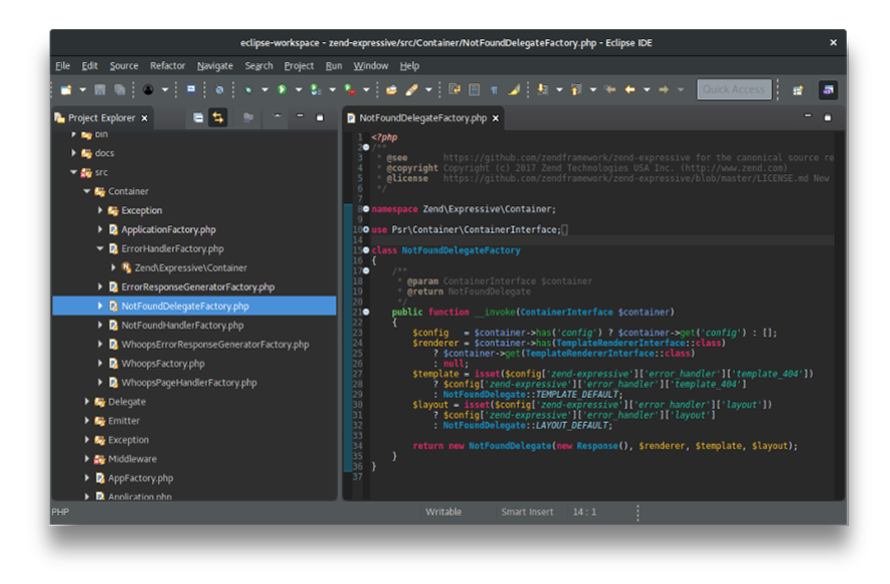
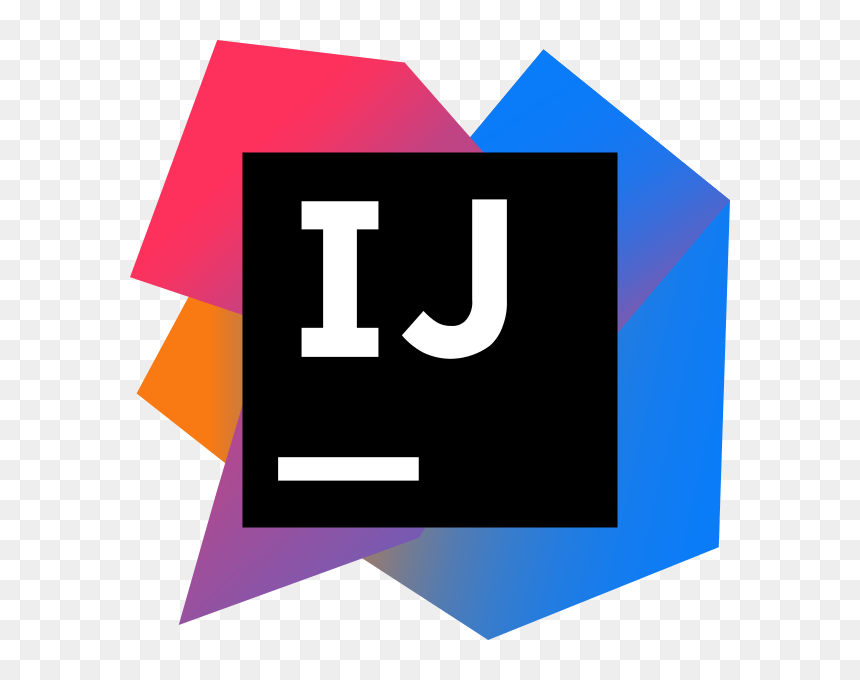
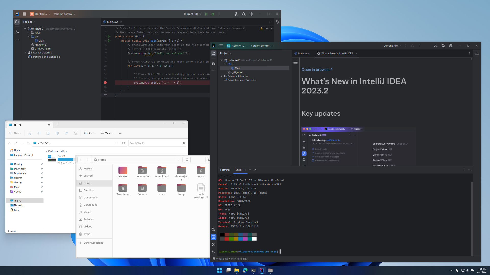

Tagasi
LowerCASE vahendid
LowerCASE vahendid on tarkvaraarenduse tööriistad, mida kasutatakse
arenduse hilisemates etappides:
- programmeerimine
- testimine
- vigade parandamine
- süsteemi hooldus
Mida need teevad?
LowerCASE vahendid aitavad:
- kirjutada ja hallata lähtekoodi
- testida tarkvara
- debug’ida programme
- juurutada ja hooldada süsteeme
Milliseid LowerCASE vahendeid olen kasutanud?
LowerCASE vahendite näited
1. Eclipse IDE
Eclipse on LowerCASE vahend, mida kasutatakse peamiselt
Java ja teiste programmeerimiskeeltega rakenduste arendamiseks.
Mida saab Eclipse IDE-ga teha?
- Kirjutada ja hallata Java koodi
- Debug’ida ja testida programme
- Kasutada pluginaid erinevate tehnoloogiate jaoks
- Versioonihalduse kasutamine (Git)
Eclipse logo:

Eclipse programmi aken:

2. IntelliJ IDEA
IntelliJ IDEA on LowerCASE vahend, mida kasutatakse
professionaalseks tarkvaraarenduseks.
Mida saab IntelliJ IDEA-ga teha?
- Kirjutada Java, Kotlin ja muid programme
- Automaatne koodi analüüs ja veaparandus
- Üksuste ja integratsioonitestide loomine
- Projektide ja versioonide haldamine
IntelliJ IDEA logo:

IntelliJ IDEA programmi aken:
